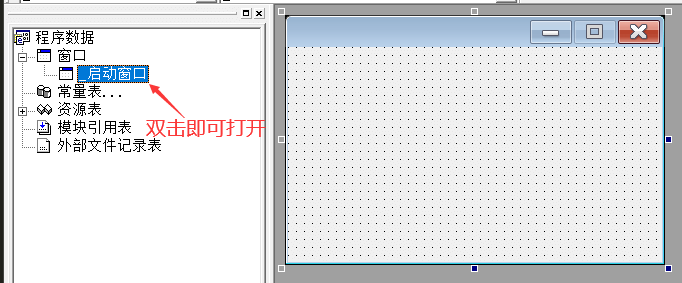
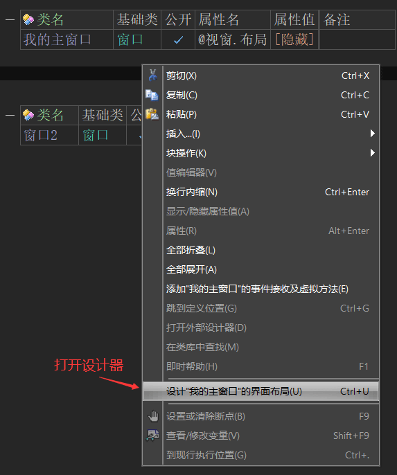
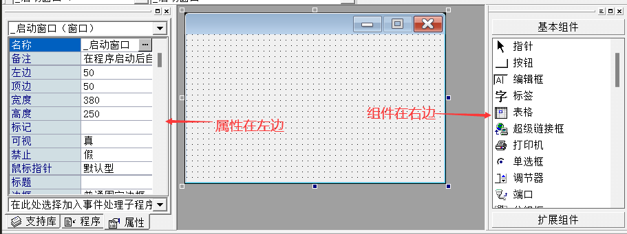
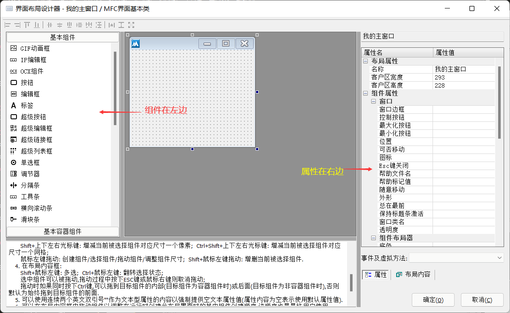
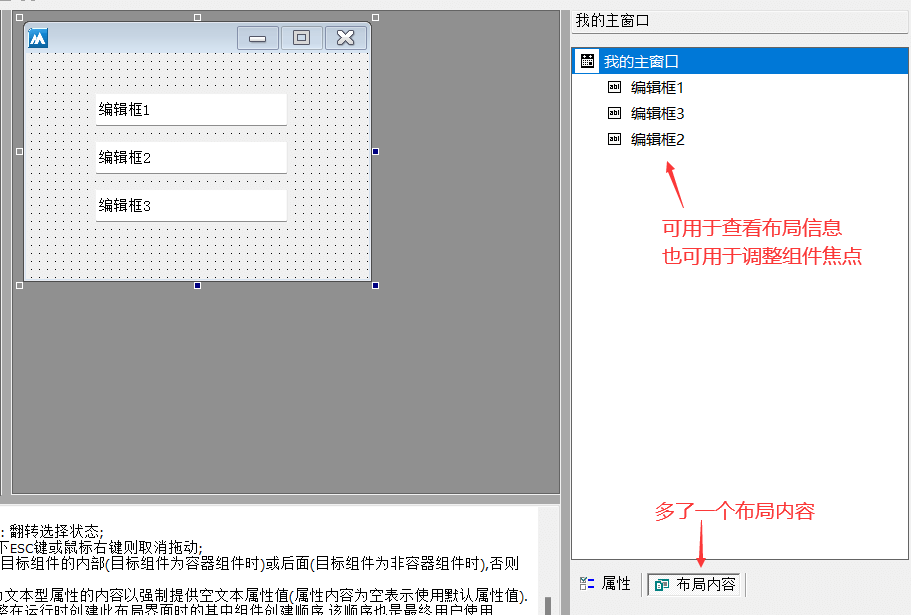
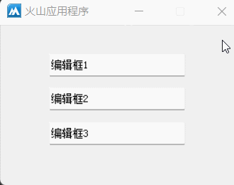
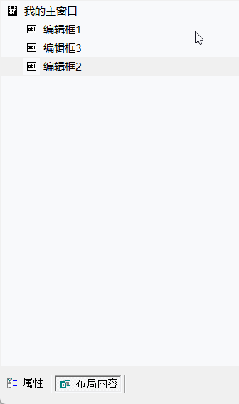
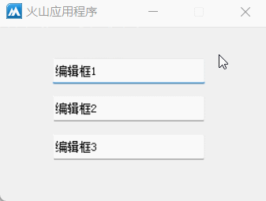

1、打开设计器
易语言演示：
在易语言中双击想要打开的窗口名称，即可打开窗口设计器。

火山视窗演示：
在火山中打开设计器需要在代码中操作，右键需要打开设计器的窗口类，选择“设计XX的界面布局”或使用快捷键“Ctrl+U”即可打开设计器。

2、设计器布局
易语言演示：
在易语言中设计器的属性在左侧，组件栏在右侧。

火山视窗演示：
在火山中正好相反，其属性在右侧，组件栏在左侧。

相对易语言的界面设计器，在火山中增加了一个“布局内容”，可用于查看布局结构或调整组件焦点。

组件焦点调整演示：
如下所示，按下“Tab”键切换焦点时，组件焦点顺序依次为“编辑框1->编辑框3->编辑框2”。

打开布局内容，鼠标点击拖放编辑框2和编辑框3交换位置，即可调整为正常焦点顺序，

如下所示，焦点顺序切换为正常状态。
